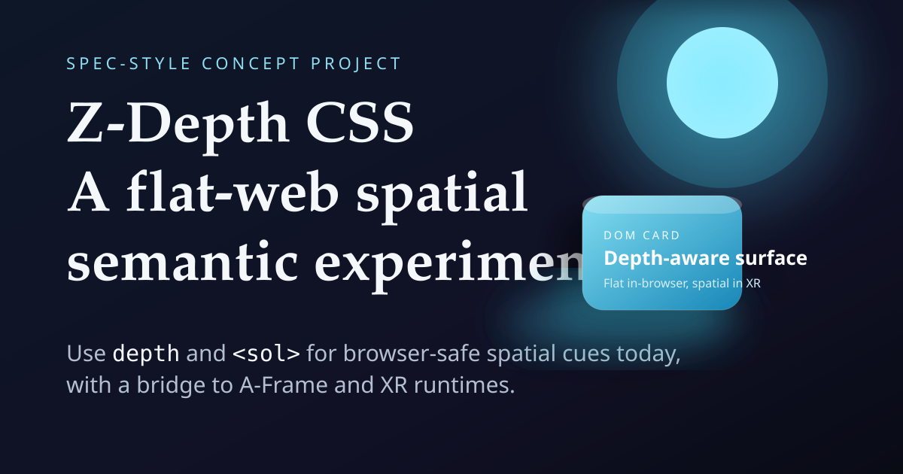

1. Declare a document light
<sol> carries light position, softness, color, and axis hints as plain
attributes. Unknown elements are browser-safe and harmless.
Contract depth-sol/0.3
Author a surface with depth and a document light named sol.
Regular browsers get stable shadows and lighting hints. A-Frame runtimes get deterministic
scene-ready geometry without becoming a dependency.

Authoring contract
The contract is intentionally small. Use CSS-like pixel values, keep source markup valid HTML, and treat spatial output as an optional interpretation.
<sol> carries light position, softness, color, and axis hints as plain
attributes. Unknown elements are browser-safe and harmless.
Add data-depth-sol-surface and a depth value. Flat layout stays
governed by normal width, height, and aspect-ratio rules.
Consumers can read the normalized model, CSS custom properties, JSON, or A-Frame-shaped markup. Nothing requires WebGL, WebXR, or A-Frame to understand the page.
Live playground
Product card
A normal DOM card with depth-aware lighting. It remains readable, selectable, and touch friendly before any spatial runtime joins in.
Choose an example or reset the playground to restore a browser-safe surface.
Examples
Bridge behavior
1000px = 1m by default. Consumers may override scale but should preserve it per scene.
Planar width and aspect ratio become width and height. Depth becomes local z size.
The surface shifts by half its depth so the authored DOM plane remains the readable face.
Layer, hover, focus, selection, and motion produce CSS variables, classes, and bridge events.
Integration contract
Read createBridgeModels(contract), map each model to existing
a-ui-* primitives, subscribe to deterministic bridge events, and keep A-Frame loaded by the consumer.
Attach depth metadata to preserved article panes, use CSS variables for the reader page, and hand JSON bridge models to any VR reading view.
Import bridge.js, call applyDepthSolCssVars(), and keep every
interaction accessible as normal HTML.